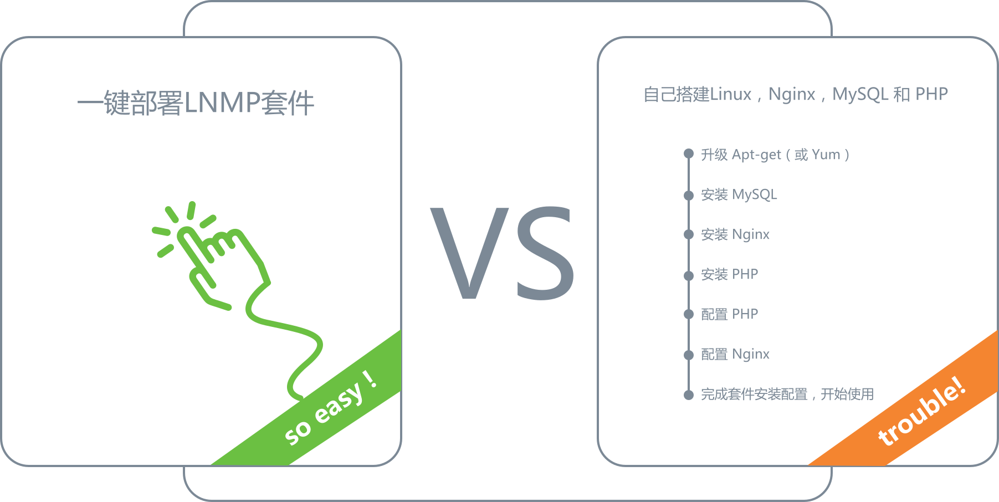

Toggle navigation
企业应用
案例
秒杀
更多案例
价格
博客
社区
公司
文档

LNMP 套件是指 Linux，Nginx，MySQL 和 PHP，这是最常见的网站服务器架构之一。通过数人云，可以一键部署整套 LNMP 套件，并可以通过 Docker 打包定制版的 LNMP 套件，快速搭建网站后端系统。
申请试用
一键部署 LNMP 套件
一键部署
一键部署 LNMP 套件 VS 自己搭建 Linux，Nginx，MySQL 和 PHP

数人云平台自身优势
一秒扩容
10倍流量体验依然顺畅
根据客户实际需求，
秒级动态伸缩业务应用实例个数，
保障业务应用的高性能。
自动恢复
保障业务永不掉线
自动发现和恢复应用实例，
保障客户应用的高可用。
一键部署、在线升级、灰度发布
10每天迭代产品
通过容器化业务应用，
配合数人云操作系统，
在不影响在线业务的同时
轻松实现在线升级和灰度发布。
自动分配、混跑业务
资源利用率提高3~5倍
可将不同应用和任务混跑在同一个集群中，
提高资源利用率。
申请试用